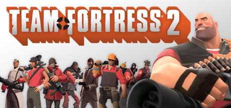
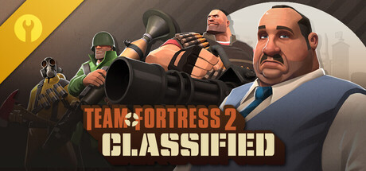

TF2 Linux x86 / x64Team Fortress 2
Сигнатуры движка и сервера.

TF2C Только Linux x64Team Fortress 2 Classified
Сигнатуры Team Fortress 2 Classified.
Список сигнатур
Для Classified доступны только сигнатуры Linux x64.
Поиск и фильтры
Результаты
Загрузка индекса…
Ничего не найдено
Попробуйте сократить запрос или изменить фильтры.